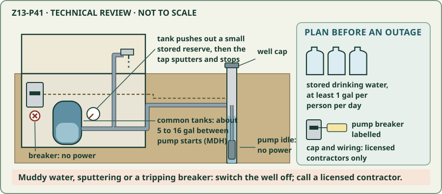

Z13-P41 · Home survival and utilities · New manuscript
Plan for private well electrical pump outages and depressurization risks
Anticipate immediate residential water loss when grid power drops on a private well and protect submersible pumps from surge/dry damage.
When it applies · Homes relying on electrically powered submersible or jet well pumps during power blackouts.
Equipment · Dedicated stored drinking water, tagged well-pump breaker, licensed transfer-switch plan if generator-backed, and spare water plan for livestock/flushing.

Actions
- A well may lose pressure or stop supplying water in an outage. Reserve capacity depends on the pressure system and settings. Follow the well contractor’s guidance on backup supply and tested operation.[U05, U06]
- Use stored potable water during a prolonged outage. Leave selection of a backup circuit and inspection after unstable power to licensed electrical and well professionals.[U02, U06]
- Never open well caps or attempt DIY electrical splicing on submersible well wiring—240-volt wet wellheads pose lethal electrocution and aquifer-contamination hazards requiring licensed well and electrical contractors.[U06, U02]
Failure recognition · Relying on a private well with zero stored bottled water, then burning out a deep submersible pump motor on a flickering brownout.[U06, U08]
Verify · Confirm stored drinking water covers outage days independently of the well, well breaker is tagged, and pump stays off during brownouts.[U06, U08, U14]
Stop or change course · Loss of well pressure paired with muddy water, air sputtering, or electrical breaker tripping requires shutting off the well breaker and calling a licensed well contractor.[U06]
Evidence and editorial notes
- U02 · CPSC · CPSC Warns of Generator, Carbon Monoxide and Fire Hazards Ahead of Hurricane Season (2026 seasonal agency guidance)
- Section: Use portable generators outdoors; keep exhaust away · Conditions: Portable generator during household outage
Support: Run outdoors at least 20 feet from buildings and direct exhaust away. Use approved connections as the manual dictates; licensed electrical work governs transfer to a building. Never backfeed.
Limitations: Distance alone does not guarantee safety. Local code and exact equipment determine installation. · Conflicting evidence: See A02 claim audit for boundaries.
Editorial note: Core electrical isolation boundary across Z13 generator cards. · Specialist reviewer: Licensed electrician and fire safety
Primary source · checked 2026-11-24 - U05 · US EPA · Private Drinking Water Wells (current web edition)
- Section: Private Drinking Water Wells > Maintenance, Floods, and Testing · Conditions: Households relying on private domestic groundwater wells
Support: Private wells are not regulated by municipal utilities; test water annually (and after any flood, power loss with pressure drop, or plumbing repair) through a certified laboratory and keep wellheads sealed above grade away from runoff and chemicals.
Limitations: Visual clarity or normal taste never proves a private well is free of bacteria, nitrates, or arsenic. · Conflicting evidence: None; aligns with CDC-WELL (W18) and MDH-WELL-HOME.
Editorial note: Core private-well governance and testing cadence in Z13. · Specialist reviewer: Hydrogeology, licensed well contractor, and public health
Primary source · checked 2026-11-24 - U06 · Minnesota Dept. of Health · Wells and Borings Safety (current web edition)
- Section: Wells and Borings > Minnesota Private Well Standards and Disinfection · Conditions: Minnesota and Upper Midwest private residential wells
Support: Use a licensed Minnesota well contractor for wellhead repair, electrical pump work, or shock disinfection after flooding or backflow; maintain sanitary well caps and isolate well casings from surface snowmelt and agricultural runoff.
Limitations: DIY well-cap removal or improper chlorine mixing risks aquifer contamination and electrical shock. · Conflicting evidence: None; regionalizes EPA-WELL for Minnesota conditions.
Editorial note: Anchors Upper Midwest private-well resilience and licensed-trade handoff. · Specialist reviewer: Minnesota environmental health and licensed well trades
Primary source · checked 2026-11-24 - U08 · FEMA / Ready.gov · Water Storage and Emergency Supply (current web edition)
- Section: Water > Emergency Household Supply, Shutoff, and Alternate Indoor Sources · Conditions: Household plumbing disruptions, water-main breaks, or winter freeze outages
Support: Store at least 1 gallon per person per day for several days (two weeks where feasible for extended outages), know the main water shutoff valve location, and recognize clean indoor water-heater reserve boundaries only after shutting off power/gas and confirming supply safety.
Limitations: Never use water from radiators, hot-water boilers, or chemically treated toilet tanks for drinking. · Conflicting evidence: None; complements CDC-S (W06, W14).
Editorial note: Covers household water shutoffs, pipe-freeze prevention, and safe indoor reserves. · Specialist reviewer: Plumbing safety and drinking-water public health
Primary source · checked 2026-11-24 - U14 · FEMA / Ready.gov · Make a Plan (current web edition)
- Section: Household Emergency Planning, Utility Maps, and Outage Checklists · Conditions: Pre-outage residential documentation and household drills
Support: Document main water, electrical panel, and gas shutoff locations, utility outage phone numbers, medical power registries, and neighborhood check-in networks on paper before storms hit.
Limitations: Utility medical-priority lists do not guarantee uninterrupted power during major ice storms or grid blackouts. · Conflicting evidence: None; bridges Z01 planning with Z13 household infrastructure.
Editorial note: Grounds household utility mapping and vulnerable-occupant contingencies. · Specialist reviewer: Emergency management and accessibility specialist
Primary source · checked 2026-11-24
Source lineage · US EPA Private Wells and MN Dept. of Health; new manuscript · Classification · New manuscript.